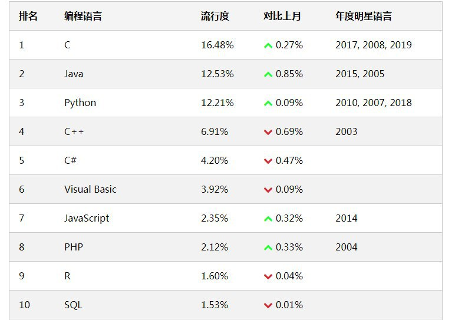
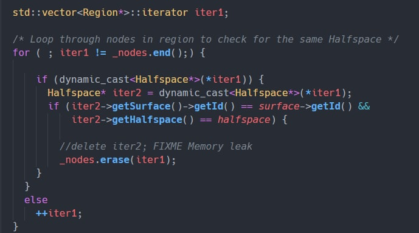

对C++编程语言的看法
C++的发展趋势
C++是一门门槛高、见效慢的语言，而且应用领域在被其他语言逐渐蚕食。C++近年来更新频繁，内容越来越多，有人觉得C++20出来后C++能翻身，具体怎样还得继续观摩。
C++20标准已经出炉，C++ Primer 6th 也快出版了。

10年以后，C++的表现明显弱势是真的，大家都会选择更快捷的语言去开发。
C++呈现弱势的原因有很多：
- c++本身语言特性不足导致太难用是其中一点
- 更多的因为处理器性能翻翻导致的
对C++编程语言的看法
不太建议没有充足的学习时间的人去学习C++，比方说工作后再专攻C++、转行学C++等等。
在学校里没学好，出了社会再学好不太现实，因为再难直接接触到**真正需要C++**的东西了。
建议去学一些其他的语言，例如Java，C#，都是门槛低，见效快的语言。
C++目前的应用领域，我个人感觉就只有：
- 高性能轮子。这一点是建立在C语言强大的统治地位之下的。
- 对性能有极限要求的项目，特别是大型项目。对性能没有极限要求的话，Java或者C#都可以做得更好得多。而且随着Java性能的提升，不少领域在逐渐被Java蚕食。
如果没机会接触这两种东西之一，那么学C++会很尴尬
不去用那些 OS specified或者compiler specified或者libc specified的
|
我發現我寫的類別總是會很多 getter / setter 只是傳回和設值 什麼都不做 我覺得這些很多餘 但是直接 public 更不好 那應該怎樣處理這些成員呢，C++ 有類似 property 的東西嗎
|
有个用rust写的电报bot叫exloli，可以用来监控并定时爬🙊
高效率 QQ 机器人框架：https://github.com/mamoe/mirai

這是我見過最神的代碼了
真的量子疊代器
全程除了自增没有别的 value write
甚至还尝试 delete 一下
“你只管写 bug，剩下的交给运气”
内卷：
据悉，在小学阶段就实现了
- 四六级左右英语水平
- 对OOP之类的编程概念的理解
- 熟练掌握swift语法
- 基本开发技巧